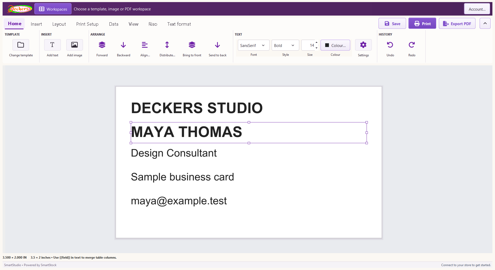
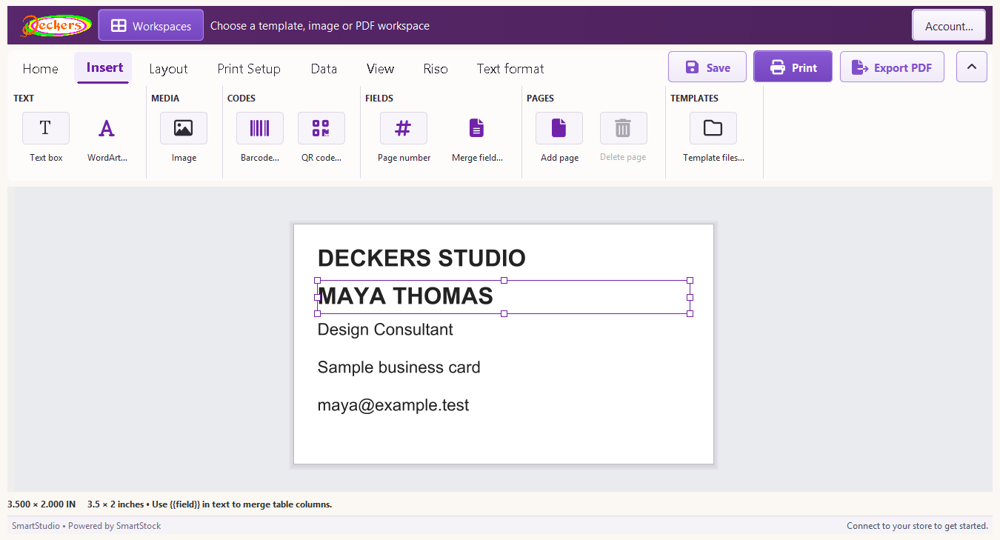
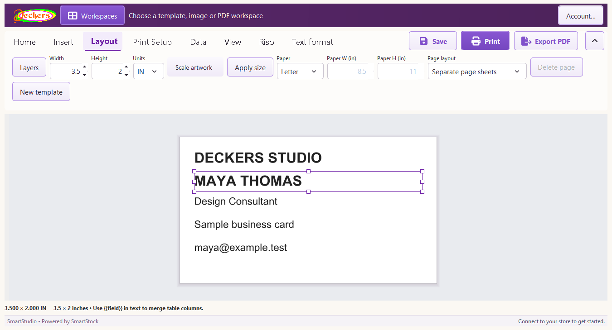
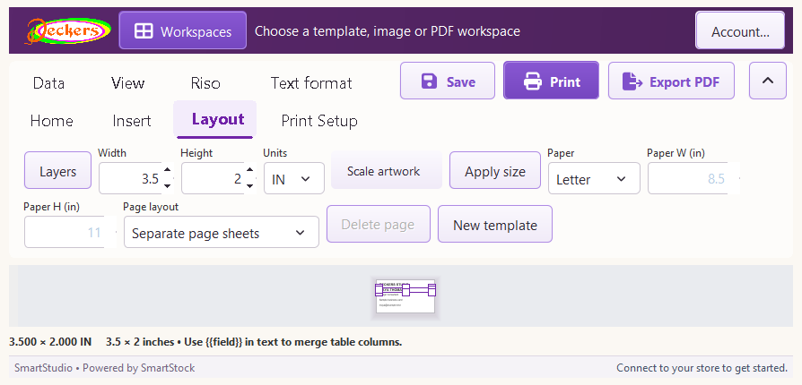
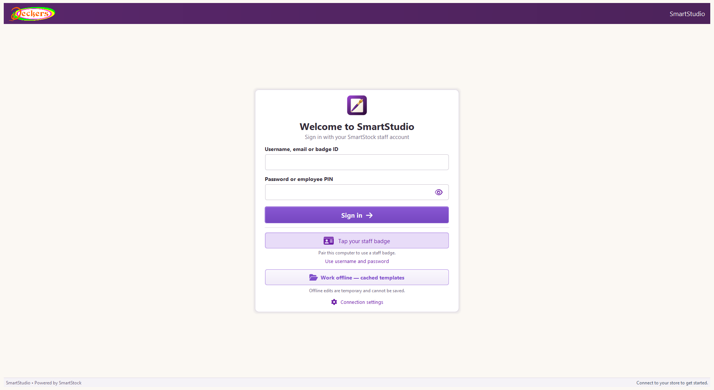

The original visual direction is retained alongside your later decisions: output actions beside the tabs, no repeated workspace heading, and actual settings inside the ribbon. Card artwork is synthetic and differs between studies; compare the application controls and surfaces.
1 · Original direction and selected tabbed revision
 Original Task Ribbon direction
Original Task Ribbon direction Selected Home / Insert revision
Selected Home / Insert revision2 · Released appearance and revised laptop layout
Top group headings, rounded ribbon and fields, broader outline icon tiles, shared purple buttons, labelled text controls, lighter document border/shadow, and less repeated header/footer space.
3 · Monitor layout

Home at 1920 × 1080 · Arrange commands expand when space permits4 · Editing and setup panels

Insert · Content and template commands Text format · Live selection controls
Text format · Live selection controls
Layout · Dimensions and paper settings Print Setup · Margins, spacing and output
Print Setup · Margins, spacing and output5 · Layers
6 · Specialist panels
7 · Tight display budget

910 × 469 logical render · Settings remain reachable; Collapse gives space back to the canvasThe tightest display budget still trades canvas height for visible settings. Native DPI and accessibility acceptance require manual verification.
8 · Approved login and Creative Brush
The company logo belongs in the top-left header. The selected v4 brush icon identifies SmartStudio on the login card, application window and launcher. NFC/connection status comes from real checks; the reference connected indicator is illustrative.

Implemented · 1920 × 1080On small logical heights the card scrolls, keeping all actions available. Password visibility resets when cleared; manual badge fallback and offline limitations are preserved.
16 px
24 px
32 px
48 px
128 px
Exact vector-only v4 source retained; transparent PNGs, Windows ICO and macOS ICNS generated. Full Studio build: 281 tests, no failures/errors, one skipped. Login/NFC and icon-resource checks passed. Native reader authentication and installed OS icon caching remain separate checks. Published as SmartStudio 0.1.72 update only.
Validation and limits
277 tests in the full Studio suite: no failures/errors; one skipped. Final focused checks, security and whitespace checks passed. These are isolated native Swing component renders. They do not prove authenticated live-store use, physical DPI/screen-reader behavior or physical printing. No backend/database/public API changes. Published 0.1.72 is verified; the historical 0.1.71 artifact remains unchanged.
Detailed comparison and verification notes